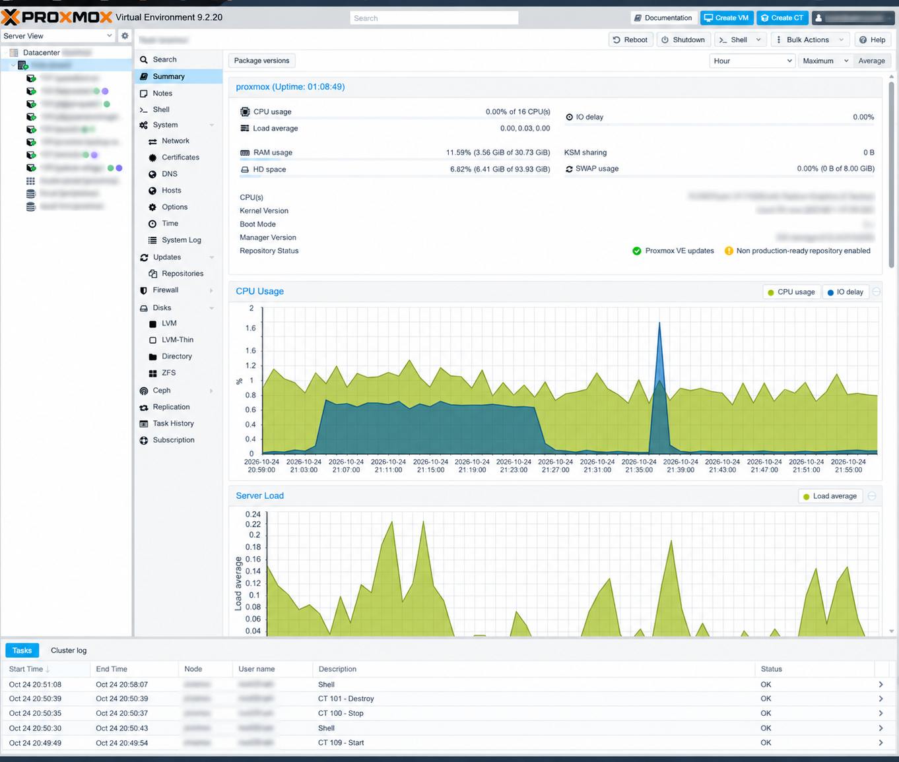
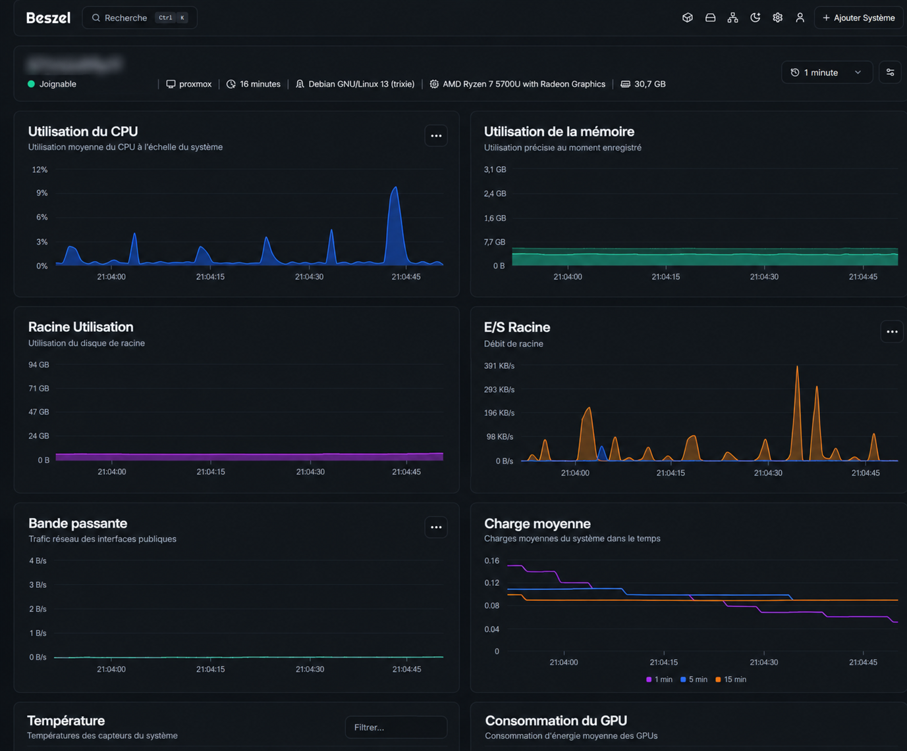

Portfolio · Projet Personnel
Mon Homelab
Mon Homelab
Proxmox.
Un environnement que j'ai monté de A à Z pour expérimenter la virtualisation, l’administration système et la sécurité réseau par la pratique.
Consulter mon profil LinkedIn
En un coup d'œil
Un laboratoire pensé pour apprendre.
Une infrastructure personnelle où chaque service répond à un objectif concret : héberger, sécuriser, sauvegarder et observer.
Homelab actif · documentation en évolution
Stack principale
Proxmox VECloudflareNginx Proxy Manager
TailscaleFail2banBeszel
Conception & Hyperviseur
Architecture logique.
Ma démarche pour isoler le réseau privé et sécuriser l'exposition de certains services sur internet.

L'interface centrale de mon hyperviseur Proxmox, montrant l'état des ressources matérielles et mes différents conteneurs actifs.
Administration système & Réseau
Les services que j'héberge.
J'ai fait le choix de virtualiser chaque outil dans des conteneurs LXC indépendants afin de compartimenter les pannes et d'optimiser les ressources de mon serveur.
Exposé publiquement
Pelican Panel
Interface d'administration de mon infrastructure de serveurs de jeux Minecraft et Satisfactory.
Protégé par VPN
Pelican Wings
Agent d'exécution qui lance et gère les serveurs de jeux pilotés depuis Pelican Panel.
Protégé par VPN
Nginx Proxy Manager
Gestionnaire de routage. Il sécurise mes connexions externes, configure mes hôtes virtuels et gère automatiquement mes certificats SSL Let's Encrypt.
Protégé par VPN
Beszel
Outil de supervision utilisé pour suivre la santé du serveur, ses ressources et son activité réseau.
Protégé par VPN
Proxmox Backup Server
Ma solution de sauvegarde. Je l'ai configurée pour effectuer des sauvegardes incrémentales et dédupliquées de mes machines virtuelles.
Protégé par VPN
Immich
Une alternative à Google Photos que j'auto-héberge. Cela me permet de tester la gestion de stockage intensif et le traitement d'images par IA locale.
Protégé par VPN
Filebrowser
Une interface web allégée et ultra-rapide pour la gestion, le partage et la navigation dans mes fichiers distants en toute sécurité.
Protégé par VPN
Speedtest-tracker
Un outil automatisé que j'ai mis en place pour générer un historique constant de la stabilité et du débit de ma connexion internet.

Configuration de Nginx Proxy Manager : gestion du routage DNS et génération automatisée de certificats SSL Let's Encrypt.
Bonnes pratiques
Mes mesures de sécurité.
Gérer un serveur connecté à internet implique des risques. Voici les règles que je m'impose.
- Réseau Zero-Trust (Tailscale) Je n'ouvre aucun port d'administration (SSH, Proxmox) sur ma box internet. Tout accès distant nécessite une connexion à mon tunnel VPN WireGuard.
- Prévention d'intrusions (Fail2ban) J'ai configuré Fail2ban pour bannir automatiquement les adresses IP qui tenteraient de forcer l'accès (brute-force) à mes services exposés.
- MFA & Gestion des accès J'impose une double authentification (TOTP) sur tous mes panneaux de contrôle et l'accès Root par mot de passe est désactivé au profit de clés SSH privées.
Observabilité
Supervision du matériel.
J'utilise l'API de Proxmox couplée à Beszel pour monitorer la santé de ma machine au quotidien (CPU, RAM, état des disques, températures).

Surveillance en temps réel des charges système, du réseau et de l'espace disque via Beszel.
Mes prochains projets
Évolutions prévues.
Mon infrastructure est mon terrain de jeu. Voici ce que je compte y intégrer prochainement :
Filtrage DNS & Sécurité
Mon prochain défi est de configurer un Raspberry Pi avec Pi-hole pour intercepter et bloquer le trafic publicitaire et la télémétrie sur l'ensemble de mon réseau domestique.
Serveur Relais (VPS)
Je souhaite acquérir un VPS distant qui fera office de bouclier, afin de masquer définitivement mon adresse IP résidentielle lorsque j'expose un service.
NAS Personnel
Je compte installer TrueNAS et configurer une grappe RAID de 2 disques (4 To) pour mieux comprendre la redondance matérielle et sécuriser les données familiales.
Mise à niveau matérielle
J'ai prévu de doubler la mémoire vive de mon serveur (passage à 64 Go) et d'ajouter des disques NVMe pour supporter la charge de mes futurs conteneurs.
Infrastructure IA
Je m'intéresse de plus en plus à l'hébergement local de modèles de langage (LLM). Je souhaite dédier une partie de mes ressources pour expérimenter avec Ollama.